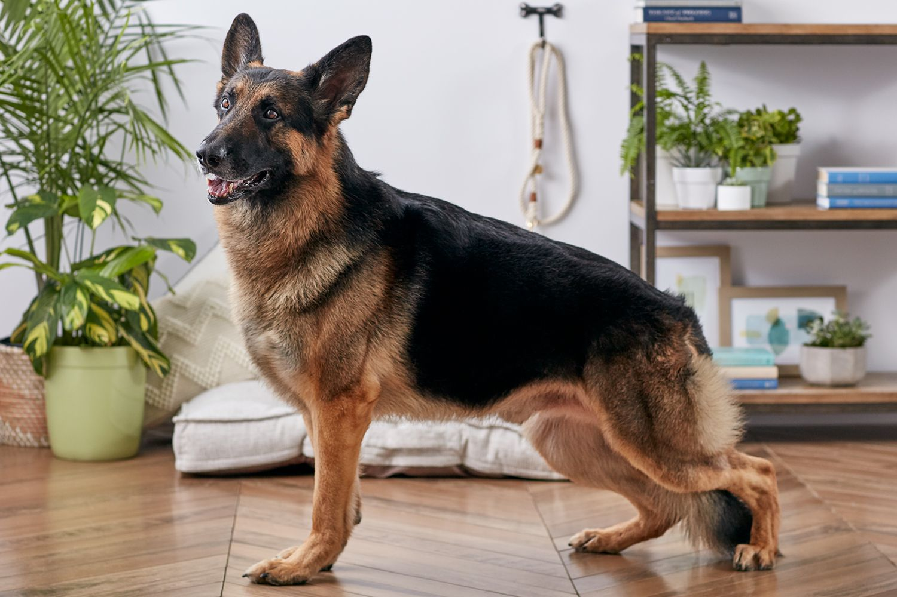

Woofkipedia


Meet the German Shepherd!
The German Shepherd, with its striking good looks and air of authority, is the second most popular dog breed in the United States. Originating in Germany, these dogs were initially bred for herding sheep. German cavalry officer Captain Max von Stephanitz played a crucial role in developing the breed. German Shepherds are large, muscular, and agile. Their distinctive features include a wide, wedge-shaped head, erect pointed ears, and a double coat. The coat color is typically tan with a black “saddle” on the top and sides. They can also be red and black. These dogs reach adulthood between 1 and 3 years and have an average lifespan of 9 to 13 years. German Shepherds are known for their intelligence, loyalty, and hardworking nature.
Varieties
-German Shepherds come in various lines, each with its own heritage and purpose: American and Canadian Show Lines: These dogs have diverged from their German origin and focus on consistent body style, coloration, and gait. They are bred for appearance rather than temperament. Working Lines: These dogs prioritize health and personality over specific looks. They excel in roles such as military, police work, and search and rescue missions. Other variations include West German Show Line, East German Working Line (DDR), and Czech German Shepherd.Personality
-German Shepherds possess a loyal, intelligent, and protective temperament. They tend to be aloof with strangers, which can sometimes be mistaken for aggression. Proper socialization ensures they get along well with children and other pets. These dogs are eager to please, highly trainable, and bond closely with their owners. Their history as military and police dogs highlights their courage and work ethic.Gallery

Diet Chart
| Life stage | Meal size |
|---|---|
| Before 6 weeks | Breast milk |
| 6 to 10 weeks | 50gr per kg of weight per day |
| 10 to 12 weeks | 60-70gr per kg of weight per day |
| 3 to 4 months | 80-90gr per kg of weight per day |
| 4 months | 2 meals of 300-400gr per day |
| 1 to 7 years | 2 meals per day |
| More than 7 years | 2 meals per day |